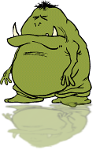

Please login to access OGRE
Logging in will allow you to move from page to page without losing settings, as well as bring you to your studies faster
Type in your username
(if you've never used OGRE before, this will create a new account for you. Leave blank to login as guest)
